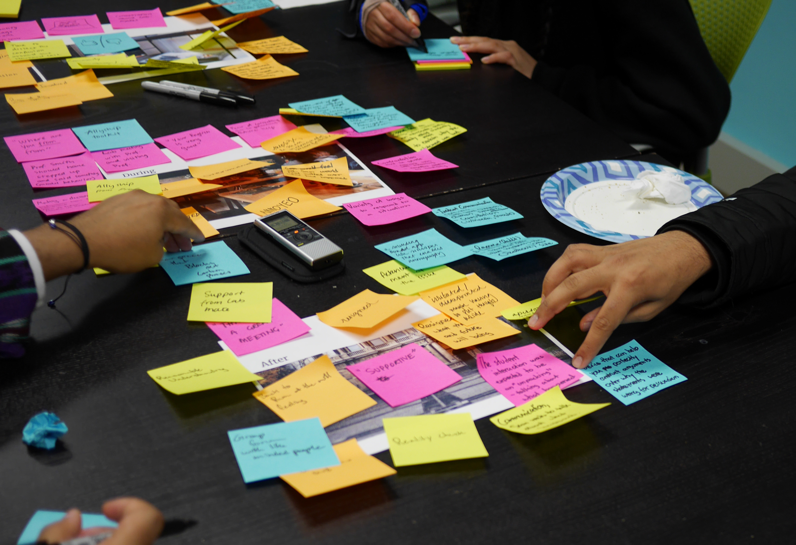

Hand Gesture Recognition

Overview:
Developed a machine learning-based system to recognize hand gestures for enhancing human-computer interaction. The project explored feature extraction techniques and leveraged image processing and neural networks to classify static hand gestures effectively.
Project Highlights:
- Pre-processed images using segmentation, noise reduction, and edge detection techniques to isolate hand gestures.
- Designed a pipeline to capture gestures via webcam and classify them in real-time.
- Achieved high recognition accuracy by combining boundary-based and region-based feature extraction methods.
Key Features:
- Implemented Histogram of Oriented Gradients (HOG) and Fibonacci Weighted Neighborhood Patterns (FWNP) for robust feature extraction.
- Utilized a neural network architecture to classify gestures with high accuracy.
- Developed an efficient system capable of recognizing gestures under varying conditions such as changes in lighting, background, and scale.
Tech Stack:
- Programming Languages:Python
- Libraries:OpenCV, TensorFlow, Keras
- Dataset:NUS hand posture dataset
Applications:
- Touchless control of electronic devices and gadgets.
- Applications in home automation, gaming, defense, and sign language translation.